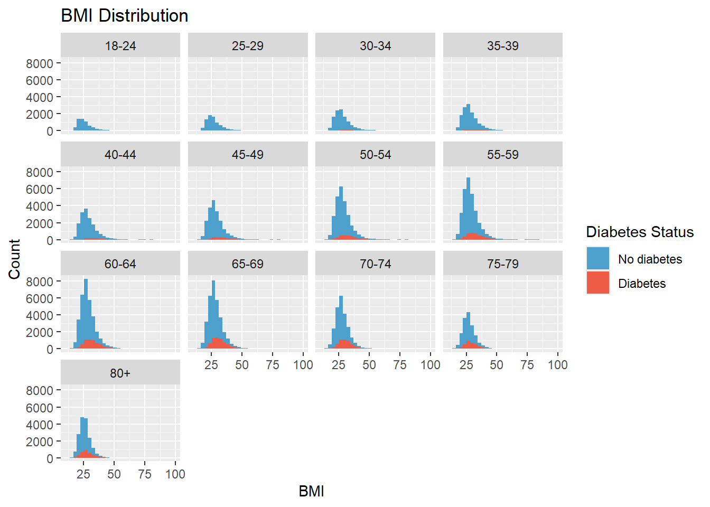
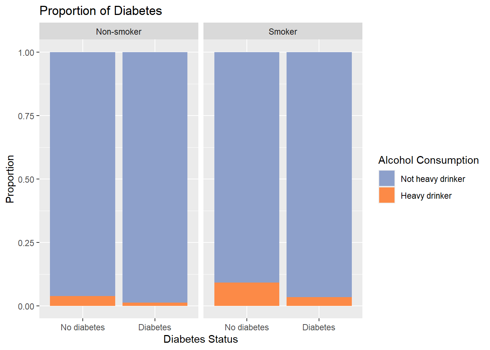
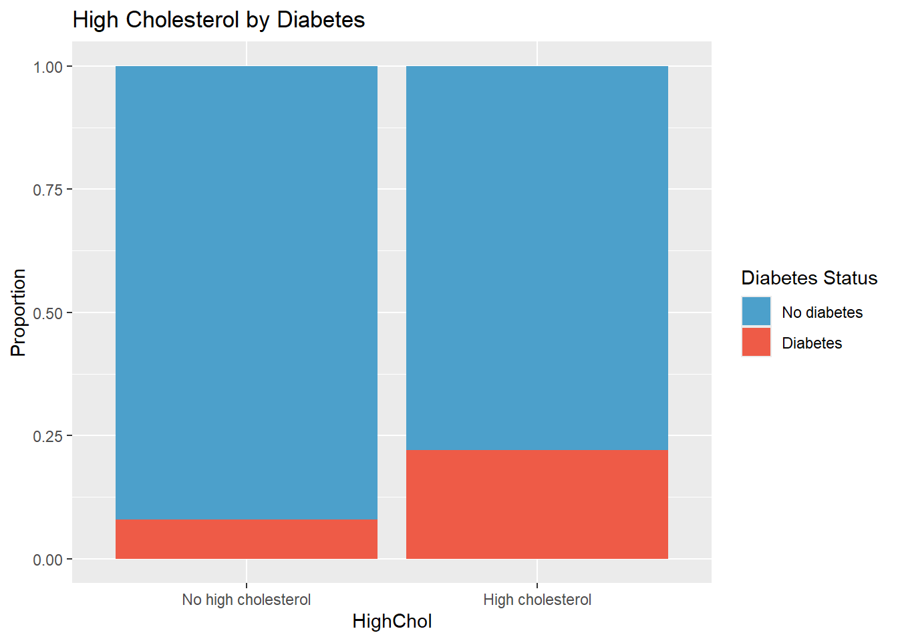

I will be exploring the Diabetes Health Indicators Dataset. The response variable of interest is Diabetes_binary, which tells us if an individual has no diabetes or not. The variables I would like to explore for this project are:
HighBP Whether or not they have high blood pressure.
HighChol Whether or not they have high cholesterol.
BMI
Age
GenHlth Self reported health score with 1 being excellent 5 being poor.
Sex
Smoker Whether or not they smoked at least 100 cigarettes in their life.
HvyAlcoholConsump Adult men having more than 14 drinks per week and adult women having more than 7 drinks per week.
# packages neededlibrary("tidyverse")
Warning: package 'tidyverse' was built under R version 4.4.3
Warning: package 'ggplot2' was built under R version 4.4.3
Warning: package 'tibble' was built under R version 4.4.2
Warning: package 'tidyr' was built under R version 4.4.3
Warning: package 'readr' was built under R version 4.4.3
Warning: package 'purrr' was built under R version 4.4.3
Warning: package 'dplyr' was built under R version 4.4.2
Warning: package 'stringr' was built under R version 4.4.2
Warning: package 'forcats' was built under R version 4.4.3
Warning: package 'lubridate' was built under R version 4.4.3
── Attaching core tidyverse packages ──────────────────────── tidyverse 2.0.0 ──
✔ dplyr 1.1.4 ✔ readr 2.1.5
✔ forcats 1.0.0 ✔ stringr 1.5.1
✔ ggplot2 4.0.0 ✔ tibble 3.2.1
✔ lubridate 1.9.4 ✔ tidyr 1.3.1
✔ purrr 1.2.0
── Conflicts ────────────────────────────────────────── tidyverse_conflicts() ──
✖ dplyr::filter() masks stats::filter()
✖ dplyr::lag() masks stats::lag()
ℹ Use the conflicted package (<http://conflicted.r-lib.org/>) to force all conflicts to become errors
Reading in the data involves mutating variables that are coded as numbers and turnin g them into factors with the appropriate labels. Note I had to reference the codebook for the data to find the levels for a few of these variables.
Rows: 253680 Columns: 22
── Column specification ────────────────────────────────────────────────────────
Delimiter: ","
dbl (22): Diabetes_binary, HighBP, HighChol, CholCheck, BMI, Smoker, Stroke,...
ℹ Use `spec()` to retrieve the full column specification for this data.
ℹ Specify the column types or set `show_col_types = FALSE` to quiet this message.
# validate our data read in as desiredglimpse(db_data)
Rows: 253,680
Columns: 22
$ Diabetes_binary <fct> No diabetes, No diabetes, No diabetes, No diabete…
$ HighBP <fct> High BP, No high BP, High BP, High BP, High BP, H…
$ HighChol <fct> High cholesterol, No high cholesterol, High chole…
$ CholCheck <fct> Checked cholesterol, No cholesterol check, Checke…
$ BMI <dbl> 40, 25, 28, 27, 24, 25, 30, 25, 30, 24, 25, 34, 2…
$ Smoker <fct> Smoker, Smoker, Non-smoker, Non-smoker, Non-smoke…
$ Stroke <fct> No stroke, No stroke, No stroke, No stroke, No st…
$ HeartDiseaseorAttack <fct> No CHD/MI, No CHD/MI, No CHD/MI, No CHD/MI, No CH…
$ PhysActivity <fct> No physical activity, Physically active, No physi…
$ Fruits <fct> No fruit consumed, No fruit consumed, Fruit consu…
$ Veggies <fct> Veggies consumed, No veggies consumed, No veggies…
$ HvyAlcoholConsump <fct> Not heavy drinker, Not heavy drinker, Not heavy d…
$ AnyHealthcare <fct> Has healthcare, No healthcare, Has healthcare, Ha…
$ NoDocbcCost <fct> Did not avoid care due to cost, Avoided care due …
$ GenHlth <ord> Poor, Good, Poor, Very good, Very good, Very good…
$ MentHlth <dbl> 18, 0, 30, 0, 3, 0, 0, 0, 30, 0, 0, 0, 0, 0, 30, …
$ PhysHlth <dbl> 15, 0, 30, 0, 0, 2, 14, 0, 30, 0, 0, 30, 15, 0, 2…
$ DiffWalk <fct> Difficulty walking, No difficulty walking, Diffic…
$ Sex <fct> Female, Female, Female, Female, Female, Male, Fem…
$ Age <ord> 60-64, 50-54, 60-64, 70-74, 70-74, 65-69, 60-64, …
$ Education <ord> High school graduate, College graduate, High scho…
$ Income <ord> <20k, <10k, 75k+, <50k, <25k, 75k+, <75k, <25k, <…
The data looks like it read in appropriately, I checked for missing values so we could account for them in our EDA where needed, fortunately it seems we do not have any.
We will start by doing some summary statistics on our only numeric variable, BMI.
We see those who have no diabetes are slightly lower than the overall average at 27.81. Those who have diabetes are slightly higher at 31.94. I want to create a histogram looking into the distribution of BMI by diabetes status, I will also facet by sex to see if that impacts our results.
# Histogram BMI broke down by sex and diabetes_binaryggplot(db_data, aes(x = BMI, fill=Diabetes_binary)) +facet_wrap(~Sex)+geom_histogram() +scale_fill_manual( name ="Diabetes Status",values =c("No diabetes"="#4ca0cb", "Diabetes"="#ee5b47")) +labs(title ="BMI Distribution", x ="BMI", y ="Count")
`stat_bin()` using `bins = 30`. Pick better value `binwidth`.
Here we see that the distribution of BMI by diabetes status is roughly the same for both sexes. We also observe that both those with and without diabetes seem to have a right skewed BMI. This may indicate sex is not a useful predictor of diabetes.
What if we broke this down by age group? We can create another histogram looking into the distribution of BMI by diabetes status but facet on age instead.
# Histogram BMI broke down by age and diabetes_binaryggplot(db_data, aes(x = BMI, fill=Diabetes_binary)) +facet_wrap(~Age)+geom_histogram() +scale_fill_manual( name ="Diabetes Status",values =c("No diabetes"="#4ca0cb", "Diabetes"="#ee5b47")) +labs(title ="BMI Distribution", x ="BMI", y ="Count")
`stat_bin()` using `bins = 30`. Pick better value `binwidth`.

We see younger people tend to not have diabetes, while older individuals do. The distribution of BMI still looks to similar between age groups and diabetes status, at the very least no distributions stick out to us.
Thinking about overall health lets now look at the contingency table for self reported general health scores.
Excellent Very good Good Fair Poor
45299 89084 75646 31570 12081
Most people reported very good, while the least people reported poor.
How does this change when we break it up by diabetes status?
# contingency table GenHlth by Diabetes_binaryn_health_db <-table(db_data$GenHlth,db_data$Diabetes_binary)n_health_db
No diabetes Diabetes
Excellent 44159 1140
Very good 82703 6381
Good 62189 13457
Fair 21780 9790
Poor 7503 4578
The overall pattern holds for those without diabetes but for those who do have it we see most people report good health, and the least people report excellent health. This indicates to us that those who have diabetes tend to feel worse about their general health.
People who smoke or consume lots of alcohol generally have poorer health, does this also apply to diabetes, lets check the contingency tables.
# contingency table Smoker by Diabetes_binaryn_smoke_db <-table(db_data$Smoker,db_data$Diabetes_binary)n_smoke_db
No diabetes Diabetes
Non-smoker 124228 17029
Smoker 94106 18317
# contingency table HvyAlcoholConsump by Diabetes_binaryn_smoke_db <-table(db_data$HvyAlcoholConsump,db_data$Diabetes_binary)n_smoke_db
No diabetes Diabetes
Not heavy drinker 204910 34514
Heavy drinker 13424 832
Here we see that the heavy drinking group is smaller than the not heavy drinking group for both those with diabetes and those without. However, we we see that the smoker group is larger for the diabetes group. Lets try combining the two into a bar plot that displays proportion (to account for the fact the diabetes group has less observations) to see if this reveals any patterns.
# Bar plot w/ diabetes_binary by HvyAlcoholConsump and smokerggplot(db_data, aes(x = Diabetes_binary, fill=HvyAlcoholConsump)) +facet_wrap(~Smoker)+geom_bar(position="fill") +scale_fill_manual( name ="Alcohol Consumption",values =c("Not heavy drinker"="#8da0cb", "Heavy drinker"="#fc8a47")) +labs(title ="Proportion of Diabetes", x ="Diabetes Status", y ="Proportion")

This communicates to us that people with diabetes do not have a higher proportion of heavy drinkers who smoke than those without diabetes. Maybe these two variables are not useful in predicting diabetes status.
From my knowledge, cholesterol and blood pressure are important indicators of diabetes. For that reason I will analyze them separately in bar plots that use proportion.
#HighBP# Proportion bar chartggplot(db_data, aes(x = HighBP, fill = Diabetes_binary)) +geom_bar(position ="fill") +scale_fill_manual( name ="Diabetes Status",values =c("No diabetes"="#4ca0cb", "Diabetes"="#ee5b47")) +labs(title ="High Blood Pressure by Diabetes", y ="Proportion")
#HighChol# Proportion bar chartggplot(db_data, aes(x = HighChol, fill = Diabetes_binary)) +geom_bar(position ="fill") +scale_fill_manual( name ="Diabetes Status",values =c("No diabetes"="#4ca0cb", "Diabetes"="#ee5b47")) +labs(title ="High Cholesterol by Diabetes", y ="Proportion")

This theory holds, we see a greater proportion of people with diabetes have high blood pressure, and have high cholesterol compared to those with diabetes with no high blood pressure and no high cholesterol respectively.
Looking at whats needed for the API section of this project I ran the following additional contingency tables to find the most prevalent classes for categorical variables.
I think HighBP, HighChol, BMI, Age, and GenHlth will be useful in predicting diabetes status while Sex, Smoker, and HvyAlchoholConsump will not. I will thus being using these five predictors in my modeling!